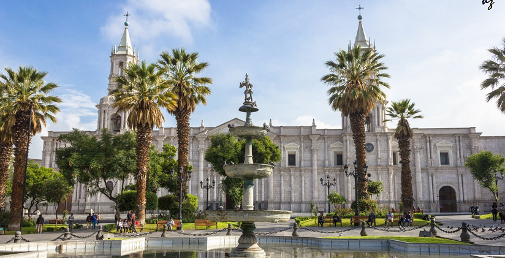

Arequipa es la ciudad de sillar (piedra blanca), con destinos como nevados, volcanes como el Misti,
profundos cañones como el Cotahuasi y el Colca, una reconocida gastronomía, caletas y playas.
Asentada entre la costa y la sierra sur del Perú hasta los Andes. Contiene el pico nevado Ampato (6.288 msnm),
Chachani (6.075 msnm) y Misti (5.825 msnm).
